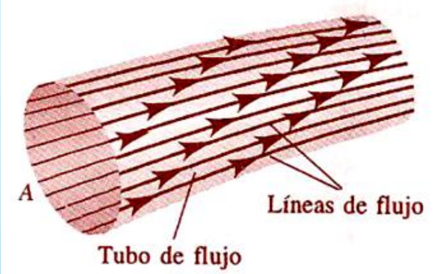
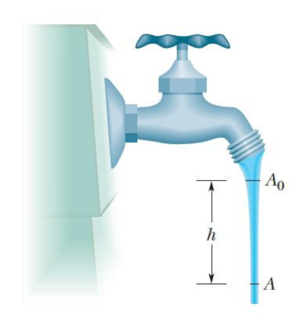
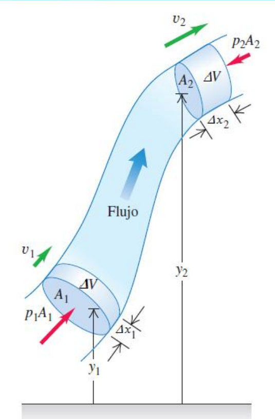
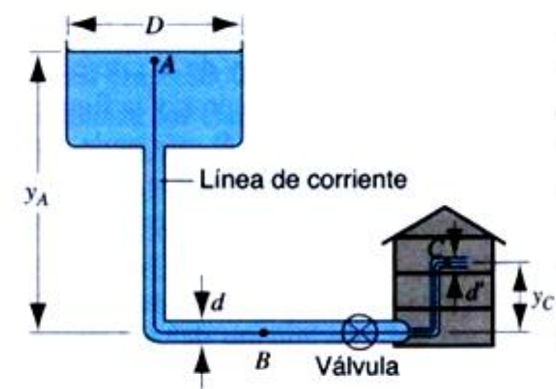
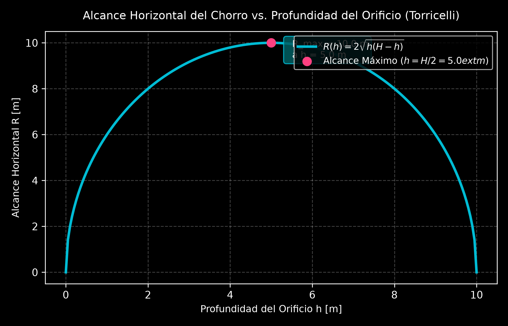
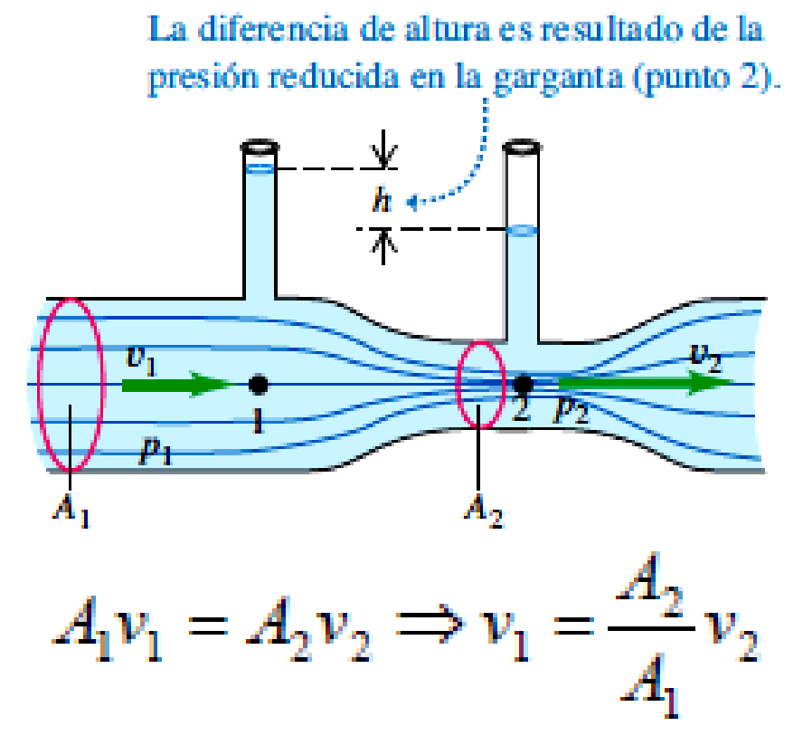
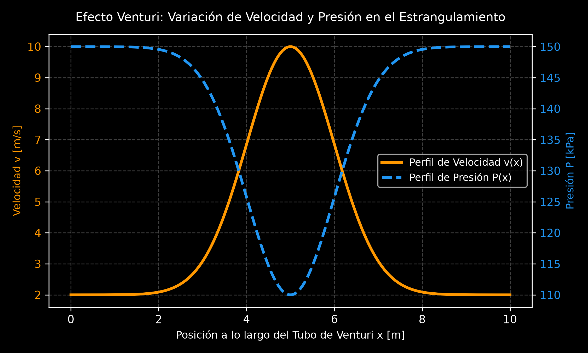
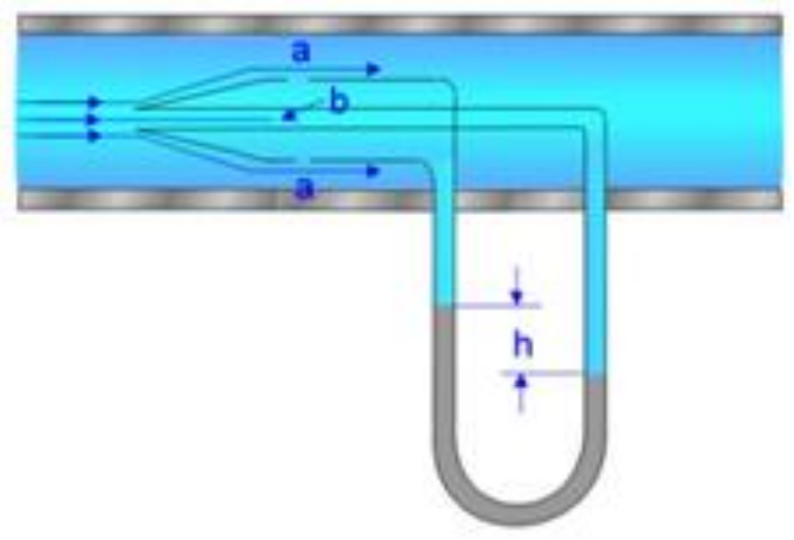
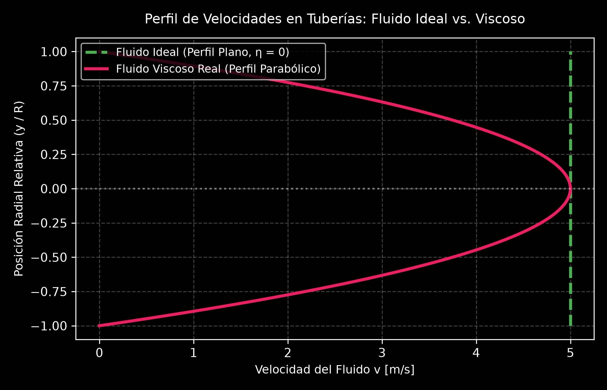

5.2 Hidrodinámica: Teoría, Principios e Integración Práctica
1. Clasificación del Flujo y Modelo del Fluido Ideal
La hidrodinámica es la rama de la física que estudia el comportamiento y las leyes que rigen el movimiento de los fluidos (líquidos y gases). Dado que el movimiento de un fluido real involucra fenómenos complejos como fricción interna y turbulencias, se utiliza el modelo de fluido ideal mediante suposiciones simplificadoras.
A. Clasificación del Flujo de un Fluido
El flujo de un fluido se clasifica atendiendo a cuatro criterios fundamentales:
- Atendiendo a la velocidad de las partículas en el tiempo:
- Flujo Estacionario (Laminar): La velocidad de las partículas de fluido que pasan por un punto dado es constante en todo instante de tiempo.
- Flujo No Estacionario: La velocidad de las partículas en cualquier punto depende del tiempo.
- Atendiendo a la velocidad angular neta:
- Flujo Irrotacional: El elemento de fluido no tiene velocidad angular neta alrededor de ningún punto.
- Flujo Rotacional: Las partículas del fluido poseen velocidad angular neta no nula.
- Atendiendo a las variaciones de densidad:
- Flujo Incompresible: La densidad \(\rho\) permanece constante en todo el espacio (característico de los líquidos).
- Flujo Compresible: La densidad varía de punto a punto en función de la posición o la presión.
- Atendiendo a los rozamientos internos:
- Flujo No Viscoso: Ausencia total de rozamiento interno; no hay disipación de energía mecánica.
- Flujo Viscoso: Existen fuerzas tangenciales entre las distintas capas de fluido que disipan energía en forma de calor.
B. Las 4 Hipótesis del Fluido Ideal
Para el análisis teórico en este nivel académico, se asume un fluido ideal que cumple cuatro hipótesis simplificadoras:
C. Líneas y Tubos de Corriente
- Líneas de Corriente (o de flujo): Son líneas imaginarias dibujadas a través del fluido en movimiento cuya tangente en cualquier punto indica la dirección instantánea del vector velocidad \(\vec{v}\) de las partículas. En un flujo estacionario, las líneas de corriente no se cruzan.
- Tubo de Corriente (o de flujo): Es la región del fluido delimitada por un haz de líneas de corriente. Ninguna partícula de fluido puede cruzar las paredes laterales de un tubo de corriente.

2. Ecuación de Continuidad y Caudal (Gasto)
A. Deducción del Principio de Conservación de la Masa
Consideremos el flujo de un fluido ideal a través de un tubo de sección transversal variable \(A_1\) y \(A_2\). En un intervalo de tiempo \(\Delta t\), la masa \(\Delta m_1\) que ingresa por el extremo 1 debe ser igual a la masa \(\Delta m_2\) que sale por el extremo 2:
Como el volumen es \(\Delta V = A \cdot \Delta x\) y el desplazamiento es \(\Delta x = v \cdot \Delta t\):
Para un fluido incompresible (\(\rho_1 = \rho_2 = \rho\)), la densidad se cancela obteniéndose la Ecuación de Continuidad:
Interpretación: La velocidad de flujo es inversamente proporcional al área de la sección transversal de la tubería. Cuando el área disminuye (estrangulamiento), la velocidad del fluido aumenta proporcionalmente.
graph LR subgraph S_Continuidad["Ecuación de Continuidad: Conservación de la Masa"] Entrada["Entrada: Sección Mayor A₁<br>(Velocidad v₁ menor)"] -->|Masa constante Δm/Δt| Salida["Salida: Sección Menor A₂<br>(Velocidad v₂ mayor)"] Relacion["A₁ · v₁ = A₂ · v₂ = Caudal Q (Constante)"] end
B. Caudal Volumétrico o Gasto (\(Q\))
El producto del área por la velocidad representa la tasa de flujo de volumen por unidad de tiempo, denominada Caudal (\(Q\)):
🛠️ Ejemplos Prácticos Aplicados:
1. Estrangulamiento en Tubería (TP - Ejercicio B1)
Enunciado: Por una tubería de \(15\text{ cm}\) de diámetro, circula agua a razón de \(75\text{ L/min}\). En un punto se tiene un estrangulamiento de \(5\text{ cm}\) de diámetro. ¿Qué velocidad lleva el agua en ese punto?
Resolución Analítica: 1. Conversión de unidades al SI: * \(D_1 = 0.15\text{ m} \implies R_1 = 0.075\text{ m}\) * \(D_2 = 0.05\text{ m} \implies R_2 = 0.025\text{ m}\) * \(Q = 75\text{ L/min} = \frac{75 \times 10^{-3}\text{ m}^3}{60\text{ s}} = 1.25 \times 10^{-3}\text{ m}^3/\text{s}\) 2. Cálculo de la velocidad en el estrangulamiento (\(v_2\)): $\(Q = A_2 \cdot v_2 = \pi R_2^2 \cdot v_2 \implies v_2 = \frac{Q}{\pi R_2^2}\)$ $\(v_2 = \frac{1.25 \times 10^{-3}\text{ m}^3/\text{s}}{\pi (0.025\text{ m})^2} = \mathbf{0.637\text{ m/s}}\)$
2. Sección Transversal Variable (TP - Ejercicio B2)
Enunciado: Fluye agua por un tubo circular de sección transversal variable, llenándolo en todos sus puntos. a) En un punto, el radio del tubo es \(0.150\text{ m}\). ¿Qué rapidez tiene el agua si la tasa de flujo de volumen es \(1.20\text{ m}^3/\text{s}\)? b) En otro punto, la rapidez del agua es \(3.80\text{ m/s}\). ¿Qué radio tiene el tubo en este punto?
Resolución Analítica: * Parte a): $\(A_1 = \pi r_1^2 = \pi (0.150\text{ m})^2 = 0.070686\text{ m}^2\)$ $\(v_1 = \frac{Q}{A_1} = \frac{1.20\text{ m}^3/\text{s}}{0.070686\text{ m}^2} = \mathbf{16.98\text{ m/s}}\)$ * Parte b): $\(Q = A_2 \cdot v_2 \implies A_2 = \frac{Q}{v_2} = \frac{1.20\text{ m}^3/\text{s}}{3.80\text{ m/s}} = 0.3158\text{ m}^2\)$ $\(A_2 = \pi r_2^2 \implies r_2 = \sqrt{\frac{A_2}{\pi}} = \sqrt{\frac{0.3158}{\pi}} = \mathbf{0.317\text{ m}}\)$
3. Angostamiento del Chorro de Agua en un Grifo (Ejemplo Resnick-Halliday)
Enunciado: Al caer la corriente de agua que sale de un grifo, su sección se angosta. Sabiendo que \(A_0 = 1.2\text{ cm}^2\) y \(A_1 = 0.35\text{ cm}^2\), separados por una distancia vertical \(h = 45\text{ mm}\), determine el caudal de agua que fluye de la llave.

Resolución Analítica: 1. Planteo de Ecuación de Continuidad y Cinemática de Caída Libre: $\(A_0 \cdot v_0 = A_1 \cdot v_1 \implies v_1 = \frac{A_0}{A_1} v_0\)$ $\(v_1^2 = v_0^2 + 2gh\)$ 2. Sustitución y despeje de \(v_0\): $\(v_0 = \sqrt{\frac{2 g h A_1^2}{A_0^2 - A_1^2}}\)$ 3. Reemplazo numérico (\(g = 980 \text{ cm/s}^2\), \(h = 4.5 \text{ cm}\)): $\(v_0 = \sqrt{\frac{2 (980) (4.5) (0.35)^2}{(1.2)^2 - (0.35)^2}} = 28.6 \text{ cm/s}\)$ $\(Q = A_0 \cdot v_0 = (1.2 \text{ cm}^2) (28.6 \text{ cm/s}) = \mathbf{34 \text{ cm}^3\text{/s}}\)$
4. Regar un Jardín y Alcance Parabólico (Ejemplo 14.7 Serway-Jewett)
Enunciado: Un jardinero usa una manguera de \(2.50 \text{ cm}\) de diámetro para llenar una cubeta de \(30.0 \text{ L}\) en \(1.00 \text{ min}\). Luego acopla una boquilla de \(0.500 \text{ cm}^2\) de área sosteniéndola horizontalmente a \(1.00 \text{ m}\) sobre el suelo. ¿Sobre qué distancia horizontal se proyecta el agua?
Resolución Analítica: 1. Caudal y velocidad inicial en la manguera (\(v_1\)): $\(Q = \frac{30.0 \times 10^3 \text{ cm}^3}{60.0 \text{ s}} = 500 \text{ cm}^3\text{/s}\)$ $\(A_1 = \frac{\pi (2.50 \text{ cm})^2}{4} = 4.91 \text{ cm}^2 \implies v_1 = \frac{500 \text{ cm}^3\text{/s}}{4.91 \text{ cm}^2} = 1.02 \text{ m/s}\)$ 2. Velocidad de salida por la boquilla (\(v_2 = v_{xi}\)): $\(v_2 = \left(\frac{A_1}{A_2}\right) v_1 = \left(\frac{4.91 \text{ cm}^2}{0.500 \text{ cm}^2}\right) (1.02 \text{ m/s}) = 10.0 \text{ m/s}\)$ 3. Movimiento de proyectil (caída libre vertical): $\(y_f = y_i - \frac{1}{2} g t^2 \implies -1.00 \text{ m} = -\frac{1}{2} (9.80 \text{ m/s}^2) t^2 \implies t = \sqrt{\frac{2(1.00)}{9.80}} = 0.452 \text{ s}\)$ 4. Alcance horizontal (\(x_f\)): $\(x_f = v_{xi} \cdot t = (10.0 \text{ m/s}) (0.452 \text{ s}) = \mathbf{4.52 \text{ m}}\)$
3. Ecuación de Bernoulli (Conservación de la Energía Mecánica)
El Teorema de Bernoulli representa el principio de conservación de la energía mecánica aplicado a un flujo de fluido ideal (incompresible, no viscoso, estacionario e irrotacional).
A. Deducción Formal por Trabajo y Energía
Considerando el movimiento de un elemento de volumen \(\Delta V\) a través de un tubo de corriente entre una posición 1 (altura \(y_1\)) y una posición 2 (altura \(y_2\)):
- Trabajo realizado por las fuerzas de presión netas: $\(W = F_1 \Delta x_1 - F_2 \Delta x_2 = P_1 A_1 \Delta x_1 - P_2 A_2 \Delta x_2 = (P_1 - P_2) \Delta V\)$
- Variación de la Energía Cinética (\(\Delta K\)) y Potencial Gravitatoria (\(\Delta U\)): $\(\Delta K = \frac{1}{2} \Delta m (v_2^2 - v_1^2), \quad \Delta U = \Delta m \cdot g (y_2 - y_1)\)$
- Aplicando el Teorema del Trabajo y la Energía (\(W = \Delta K + \Delta U\)) y dividiendo por \(\Delta V\) (\(\rho = \frac{\Delta m}{\Delta V}\)):

B. Interpretación de Términos
- \(P\): Presión estática del fluido (energía por unidad de volumen debida a las fuerzas de presión).
- \(\frac{1}{2}\rho v^2\): Presión dinámica (energía cinética por unidad de volumen).
- \(\rho g y\): Presión hidrostática o de elevación (energía potencial gravitatoria por unidad de volumen).
Nota: Si el fluido se encuentra en reposo (\(v_1 = v_2 = 0\)), la ecuación se reduce al Teorema General de la Hidrostática: \(P_1 - P_2 = \rho g (y_2 - y_1)\).
🛠️ Ejemplos Prácticos Aplicados:
1. Tubería Descendente (TP - Ejercicio B3)
Enunciado: El agua se desplaza a \(5.18 \text{ m/s}\) por un tubo con superficie transversal de \(4.20 \text{ cm}^2\). Poco a poco desciende \(9.66 \text{ m}\) al aumentar la superficie a \(7.60 \text{ cm}^2\). a) ¿Cuál es la rapidez de flujo en el nivel inferior? b) La presión en el nivel superior es \(152 \text{ kPa}\), calcule la presión en el nivel inferior.
Resolución Analítica: * Parte a): Por continuidad \(A_1 v_1 = A_2 v_2\): $\(v_2 = \left(\frac{A_1}{A_2}\right) v_1 = \left(\frac{4.20 \text{ cm}^2}{7.60 \text{ cm}^2}\right) (5.18 \text{ m/s}) = \mathbf{2.863 \text{ m/s}}\)$ * Parte b): Ecuación de Bernoulli entre el nivel 1 (\(y_1 = 9.66 \text{ m}\)) y el nivel 2 (\(y_2 = 0\)): $\(P_2 = P_1 + \frac{1}{2}\rho(v_1^2 - v_2^2) + \rho g (y_1 - y_2)\)$ $\(P_2 = 152000 + \frac{1}{2}(1000)(5.18^2 - 2.863^2) + (1000)(9.8)(9.66) = \mathbf{256 \text{ kPa}}\)$
2. Tanque Elevado y Red Doméstica (Ejemplo 2 Resnick-Halliday)
Enunciado: Un tanque elevado de altura \(h = 32 \text{ m}\) y diámetro \(D = 3.0 \text{ m}\) abastece a una casa mediante un tubo horizontal de diámetro \(d = 2.54 \text{ cm}\) con un caudal \(Q = 0.0025 \text{ m}^3\text{/s}\). a) Calcule la presión en la tubería en la base. b) Un tubo de \(d' = 1.27 \text{ cm}\) abastece al tercer piso a \(y_C = 7.2 \text{ m}\) sobre el suelo. Calcule la presión en este punto.

Resolución Analítica: 1. Velocidades en el tanque (\(A\)), tubería base (\(B\)) y tercer piso (\(C\)): * \(v_A \approx 0\) (por ser \(D \gg d\)). * \(v_B = \frac{Q}{\pi (d/2)^2} = \frac{0.0025}{\pi (0.0127)^2} = 4.9 \text{ m/s}\) * \(v_C = \frac{Q}{\pi (d'/2)^2} = \frac{0.0025}{\pi (0.00635)^2} = 19.7 \text{ m/s}\) 2. Presión en la base (\(P_B\)): $\(P_B = P_0 + \rho g h - \frac{1}{2}\rho v_B^2 = 1.01 \times 10^5 + (1000)(9.8)(32) - \frac{1}{2}(1000)(4.9)^2 = \mathbf{4.03 \times 10^5 \text{ Pa}}\)$ 3. Presión en el tercer piso (\(P_C\)): $\(P_C = P_0 + \rho g (h - y_C) - \frac{1}{2}\rho v_C^2 = 1.01 \times 10^5 + (1000)(9.8)(32 - 7.2) - \frac{1}{2}(1000)(19.7)^2 = \mathbf{1.49 \times 10^5 \text{ Pa}}\)$
4. Aplicaciones Especiales e Instrumentación Hidrodinámica
A. Teorema de Torricelli
El Teorema de Torricelli es una aplicación particular de la Ecuación de Bernoulli que permite determinar la rapidez de salida de un líquido a través de un orificio practicado en un recipiente que lo contiene.
Deducción General para Recipientes Presurizados y Abiertos
Considerando un tanque con líquido de densidad \(\rho\), donde la superficie libre (punto 2, a una altura \(y_2\)) se encuentra a una presión \(P\), y el orificio de salida (punto 1, a una altura \(y_1\)) descarga a la atmósfera a presión \(P_0\):
- Ecuación de Bernoulli entre los puntos 1 y 2: $\(P_0 + \frac{1}{2}\rho v_1^2 + \rho g y_1 = P + \frac{1}{2}\rho v_2^2 + \rho g y_2\)$
- Hipótesis de recipiente grande (\(A_2 \gg A_1\)): La velocidad de descenso del nivel libre es despreciable respecto a la velocidad de salida (\(v_2 \approx 0\)).
- Definiendo la profundidad del orificio respecto a la superficie libre como \(h = y_2 - y_1\):
- Caso Particular (Tanque Abierto a la Atmósfera \(P = P_0\)): La velocidad de salida es idéntica a la adquirida por un cuerpo en caída libre desde una altura \(h\):
$\(v = \sqrt{2gh}\)$
graph TD
subgraph S_Torricelli["Teorema de Torricelli: Velocidad de Descarga"]
Origen["Ecuación de Bernoulli entre Superficie Librey Orificio"] --> Caso1["Tanque Abierto (P = P₀)<br>v = √(2gh)"]
Origen --> Caso2["Tanque Presurizado (P > P₀)<br>v = √[2(P - P₀)/ρ + 2gh]"]
Caso1 --> Salida1["Caída Libre Equivalente desde Profundidad h"]
Caso2 --> Salida2["Velocidad Incrementada por Presión Neumática"]
end
🛠️ Ejemplos Prácticos Aplicados (Torricelli):
1. Fuga en Tanque Abierto (TP - Ejercicio B4)
Enunciado: Un gran tanque de almacenamiento abierto en la parte superior contiene agua. En su costado, a \(16\text{ m}\) por debajo del nivel de agua, se produce un orificio pequeño con una tasa de fuga \(Q = 2.5 \times 10^{-3}\text{ m}^3/\text{min}\). Determine: a) La rapidez con la que el agua sale del orificio. b) El diámetro del orificio.
Resolución Analítica: * Parte a): Por Teorema de Torricelli para tanque abierto (\(h = 16\text{ m}\)): $\(v = \sqrt{2gh} = \sqrt{2(9.8\text{ m/s}^2)(16\text{ m})} = \mathbf{17.71\text{ m/s}}\)$ * Parte b): Relación entre Caudal y Área (\(Q = A \cdot v\)): $\(Q = \frac{2.5 \times 10^{-3}\text{ m}^3}{60\text{ s}} = 4.167 \times 10^{-5}\text{ m}^3/\text{s}\)$ $\(A = \frac{Q}{v} = \frac{4.167 \times 10^{-5}}{17.71} = 2.353 \times 10^{-6}\text{ m}^2 \implies d = \sqrt{\frac{4A}{\pi}} = \mathbf{1.73\text{ mm}}\)$
2. Recipiente Circular Descargando (TP - Ejercicio B5)
Enunciado: En un recipiente de gran sección lleno de agua, a \(1.20\text{ m}\) debajo de la superficie libre se realiza un agujero circular de \(5\text{ cm}\) de radio. Calcular la velocidad de salida y el caudal.
Resolución Analítica: 1. Velocidad de salida (\(h = 1.20\text{ m}\)): $\(v = \sqrt{2gh} = \sqrt{2(9.8)(1.20)} = \mathbf{4.85\text{ m/s}}\)$ 2. Caudal (\(r = 0.05\text{ m} \implies A = \pi (0.05)^2 = 7.854 \times 10^{-3}\text{ m}^2\)): $\(Q = A \cdot v = (7.854 \times 10^{-3}\text{ m}^2)(4.85\text{ m/s}) = \mathbf{0.0381\text{ m}^3/\text{s}} \quad (38.1\text{ L/s})\)$
3. Depósito Hermético Presurizado (TP - Ejercicio B6)
Enunciado: Un depósito herméticamente cerrado contiene agua y en la parte superior interna la presión es \(3\text{ atm}\) (\(1\text{ atm} = 101325\text{ Pa}\)). Determinar: a) La presión a \(6\text{ m}\) por debajo del nivel del agua. b) La velocidad inicial de salida por un orificio a \(6\text{ m}\) de profundidad. c) La velocidad si se abriese la parte superior a la atmósfera.
Resolución Analítica: * Parte a): Presión absoluta a \(6\text{ m}\) (\(P_{\text{sup}} = 3 \times 101325 = 303975\text{ Pa}\)): $\(P = P_{\text{sup}} + \rho g h = 303975 + (1000)(9.8)(6) = \mathbf{362775\text{ Pa}} \quad (3.58\text{ atm})\)$ * Parte b): Velocidad con aire presurizado (\(P_0 = 101325\text{ Pa}\)): $\(v = \sqrt{\frac{2(303975 - 101325)}{1000} + 2(9.8)(6)} = \sqrt{405.3 + 117.6} = \mathbf{22.87\text{ m/s}}\)$ * Parte c): Velocidad si estuviera abierto (\(P_{\text{sup}} = P_0\)): $\(v = \sqrt{2gh} = \sqrt{2(9.8)(6)} = \mathbf{10.84\text{ m/s}}\)$
4. Descarga en Compuerta de Dique (TP - Ejercicio B7)
Enunciado: El agua ingresa de manera continua en un dique de \(15.2\text{ m}\) de profundidad. Un tubo horizontal de \(4.30\text{ cm}\) de diámetro lo cruza a \(6.15\text{ m}\) debajo de la superficie del agua protegida por una compuerta. Calcule: a) La fuerza de fricción entre la compuerta y la pared del tubo. b) El volumen de agua que sale en \(3\text{ h}\) tras abrir la compuerta. c) El alcance horizontal del chorro si el tubo descarga a \(9.05\text{ m}\) del suelo.
Resolución Analítica: * Parte a): Fuerza manométrica estática (\(h = 6.15\text{ m}\), \(A = 1.452 \times 10^{-3}\text{ m}^2\)): $\(P_{\text{man}} = \rho g h = (1000)(9.8)(6.15) = 60270\text{ Pa}\)$ $\(F_{\text{fricción}} = P_{\text{man}} \cdot A = (60270)(1.452 \times 10^{-3}) = \mathbf{87.51\text{ N}}\)$ * Parte b): Volumen en \(3\text{ h}\) (\(t = 10800\text{ s}\)): $\(v = \sqrt{2gh} = \sqrt{2(9.8)(6.15)} = 10.98\text{ m/s} \implies Q = A \cdot v = 0.01594\text{ m}^3/\text{s}\)$ $\(V = Q \cdot t = (0.01594\text{ m}^3/\text{s})(10800\text{ s}) = \mathbf{172.15\text{ m}^3}\)$ * Parte c): Alcance horizontal (\(y_0 = 9.05\text{ m}\)): $\(t_{\text{caída}} = \sqrt{\frac{2 y_0}{g}} = \sqrt{\frac{2(9.05)}{9.8}} = 1.358\text{ s} \implies x = v \cdot t_{\text{caída}} = (10.98)(1.358) = \mathbf{14.91\text{ m}}\)$
5. Tanque Presurizado con Empuje de Retroceso (TP - Ejercicio B8)
Enunciado: Un tanque cilíndrico de \(1.2\text{ m}\) de diámetro se llena hasta \(0.3\text{ m}\) de profundidad con agua. El aire superior está comprimido a \(P = 2.026 \times 10^5\text{ N/m}^2\). Se quita un tapón del fondo de área \(A_{\text{orificio}} = 2.5\text{ cm}^2\). a) Calcular la velocidad inicial de salida. b) Encontrar la fuerza vertical hacia arriba (empuje de reacción) que experimenta el tanque.
Resolución Analítica: * Parte a): Velocidad inicial de descarga (\(\Delta P = 1.013 \times 10^5\text{ Pa}\)): $\(v = \sqrt{\frac{2 \Delta P}{\rho} + 2gh} = \sqrt{\frac{2(101300)}{1000} + 2(9.8)(0.3)} = \sqrt{202.6 + 5.88} = \mathbf{14.44\text{ m/s}}\)$ * Parte b): Fuerza de reacción por Segunda Ley de Newton (\(F = \rho A v^2\)): $\(F_{\text{reacción}} = \rho \cdot A_{\text{orificio}} \cdot v^2 = (1000)(2.5 \times 10^{-4})(14.44)^2 = \mathbf{52.13\text{ N (Hacia Arriba)}}\)$
6. Descarga por Orificio a \(5\text{ m}\) (Ejemplo Bueche)
Enunciado: Un tanque abierto en su parte superior tiene una abertura de \(3.0\text{ cm}\) de diámetro situada a \(5.0\text{ m}\) por debajo del nivel de agua. ¿Qué volumen de líquido saldrá por minuto?
Resolución Analítica: 1. Velocidad de salida (\(h = 5.0\text{ m}\)): $\(v = \sqrt{2gh} = \sqrt{2(9.81)(5.0)} = 9.9\text{ m/s}\)$ 2. Caudal volumétrico en \(\text{m}^3/\text{min}\): $\(A = \pi (1.5 \times 10^{-2}\text{ m})^2 = 7.068 \times 10^{-4}\text{ m}^2\)$ $\(Q = (9.9\text{ m/s})(7.068 \times 10^{-4}\text{ m}^2) = 7.0 \times 10^{-3}\text{ m}^3/\text{s} = \mathbf{0.42\text{ m}^3/\text{min}}\)$
B. Tubo de Venturi
El Tubo de Venturi es un dispositivo hidráulico diseñado para medir la velocidad de flujo y el caudal de un fluido incompresible dentro de una tubería mediante una reducción en la sección transversal (garganta).
Deducción Analítica Completa
Para una tubería horizontal (\(y_1 = y_2\)): 1. Ecuación de Bernoulli: $\(P_1 + \frac{1}{2}\rho v_1^2 = P_2 + \frac{1}{2}\rho v_2^2 \implies P_1 - P_2 = \frac{1}{2}\rho (v_2^2 - v_1^2)\)$ 2. Por Ecuación de Continuidad (\(v_1 = \frac{A_2}{A_1} v_2\)): $\(P_1 - P_2 = \frac{1}{2}\rho v_2^2 \left[1 - \left(\frac{A_2}{A_1}\right)^2\right] \implies v_2 = A_1 \sqrt{\frac{2(P_1 - P_2)}{\rho(A_1^2 - A_2^2)}}\)$
Integración con Manómetro Diferencial de Mercurio (\(\rho_{\text{Hg}}\))
Si se conecta un manómetro en U con líquido manométrico de densidad \(\rho_{\text{Hg}}\), la diferencia de presión se iguala a \(P_1 - P_2 = g h (\rho_{\text{Hg}} - \rho)\):


🛠️ Ejemplos Prácticos Aplicados (Venturi):
1. Venturi Simple en Cañería (TP - Ejercicio B9)
Enunciado: Para saber la velocidad del agua en una cañería de \(40\text{ cm}^2\) se empalma un conector 10 veces menor (\(A_2 = 4\text{ cm}^2\)) con dos tubos manométricos. La diferencia de nivel alcanzada es \(h = 5\text{ cm}\). Calcular la velocidad en ambas secciones y el caudal.
Resolución Analítica: 1. Diferencia de presión piezométrica (\(P_1 - P_2 = \rho g h\)): $\(P_1 - P_2 = (1000)(9.8)(0.05) = 490\text{ Pa}\)$ 2. Velocidad en la sección angosta (\(v_2\)): $\(v_2 = A_1 \sqrt{\frac{2 g h}{A_1^2 - A_2^2}} = (40 \times 10^{-4}) \sqrt{\frac{2(9.8)(0.05)}{(40 \times 10^{-4})^2 - (4 \times 10^{-4})^2}}\)$ $\(v_2 = 40 \times 10^{-4} \sqrt{\frac{0.98}{1.584 \times 10^{-5}}} = (40 \times 10^{-4})(248.74) = \mathbf{0.995\text{ m/s}}\)$ 3. Velocidad en la cañería principal (\(v_1\)) y Caudal (\(Q\)): $\(v_1 = \frac{v_2}{10} = \mathbf{0.0995\text{ m/s}}\)$ $\(Q = A_1 \cdot v_1 = (40 \times 10^{-4}\text{ m}^2)(0.0995\text{ m/s}) = \mathbf{3.98 \times 10^{-4}\text{ m}^3/\text{s}} \quad (0.398\text{ L/s})\)$
2. Venturi con Manómetro de Mercurio (Ejemplo San Juan / TP)
Enunciado: Un tubo de Venturi tiene un diámetro de entrada \(D_1 = 40\text{ cm}\) y en la garganta \(D_2 = 20\text{ cm}\). El manómetro de mercurio (\(\rho_{\text{Hg}} = 13.6\text{ g/cm}^3\)) indica una diferencia de nivel \(h = 30\text{ cm}\). Calcule el caudal de agua.
Resolución Analítica: 1. Cálculo de Áreas: * \(A_1 = \pi (40)^2 / 4 = 1256.64\text{ cm}^2\) * \(A_2 = \pi (20)^2 / 4 = 314.16\text{ cm}^2\) 2. Reemplazo en la fórmula de Caudal en CGS (\(\rho = 1\text{ g/cm}^3\), \(g = 980\text{ cm/s}^2\)): $\(Q = \sqrt{\frac{2(980)(314.16)^2(1256.64)^2(13.6 - 1)(30)}{1 \cdot [(1256.64)^2 - (314.16)^2]}}\)$ $\(Q = 3.0 \times 10^5\text{ cm}^3/\text{s} = \mathbf{0.3\text{ m}^3/\text{s}}\)$
C. Tubo de Pitot
El Tubo de Pitot es un instrumento utilizado para medir la velocidad de flujo de un gas o líquido en una conducción o la velocidad de una nave con respecto al fluido circundante.
Deducción Analítica
Consta de dos tomas: la toma estática (perpendicular al flujo, mide \(P_a\)) y la toma de estancamiento (dirigida contra la corriente, donde el fluido se detiene \(v_b = 0\), midiendo la presión total \(P_b\)). 1. Ecuación de Bernoulli entre tomas \(a\) y \(b\): $\(P_a + \frac{1}{2}\rho_{\text{fluido}} v^2 = P_b\)$ 2. La diferencia de presión \(P_b - P_a\) equilibra la columna manométrica de líquido \(\rho_{\text{liq}}\): $\(\frac{1}{2}\rho_{\text{fluido}} v^2 = \rho_{\text{liq}} \cdot g \cdot h \implies v = \sqrt{\frac{2 \rho_{\text{liq}} g h}{\rho_{\text{fluido}}}}\)$

🛠️ Ejemplo Práctico Aplicado (Pitot):
1. Velocidad de Aeroplano (TP - Ejercicio B10)
Enunciado: Un tubo de Pitot montado en el ala de un aeroplano determina su velocidad respecto al aire (\(\rho_{\text{aire}} = 1.03\text{ kg/m}^3\)). El tubo contiene alcohol (\(\rho_{\text{alc}} = 810\text{ kg/m}^3\)) e indica un desnivel \(h = 26.2\text{ cm}\). ¿Cuál es la velocidad del aeroplano?
Resolución Analítica: $\(v = \sqrt{\frac{2 \cdot \rho_{\text{alc}} \cdot g \cdot h}{\rho_{\text{aire}}}}\)$ $\(v = \sqrt{\frac{2 (810\text{ kg/m}^3) (9.8\text{ m/s}^2) (0.262\text{ m})}{1.03\text{ kg/m}^3}} = \sqrt{\frac{4159.27}{1.03}} = \sqrt{4038.13} = \mathbf{63.55\text{ m/s}} \quad (228.8\text{ km/h})\)$
5. Introducción a Fluidos Reales: Viscosidad y Régimen de Flujo
A. Viscosidad Dinámica (\(\eta\))
La viscosidad representa el rozamiento interno de un fluido real debido a las fuerzas de cohesión entre sus moléculas. Al deslizar una placa móvil sobre un fluido viscoso confinado sobre una placa fija, se establece un perfil lineal de velocidades.
B. Número de Reynolds (\(N_R\)) y Regímenes de Flujo
Osborne Reynolds demostró experimentalmente que el carácter del flujo en una tubería cilíndrica de diámetro \(D\) depende de la densidad \(\rho\), la velocidad media \(v\) y la viscosidad dinámica \(\mu\):
Criterios de Clasificación:
- Flujo Laminar (\(N_R \le 2000\)): El fluido se mueve en capas paralelas o láminas suaves sin mezclado macroscópico.
- Zona de Transición (\(2000 < N_R < 4000\)): Inestable; el flujo puede alternar entre laminar y turbulento.
- Flujo Turbulento (\(N_R \ge 4000\)): El flujo presenta remolinos, vórtices y mezcla caótica de partículas.
graph TD subgraph S_Reynolds["Clasificación del Flujo según el Número de Reynolds (N_R)"] NR["N_R = (ρ · v · D) / μ"] --> Laminar["N_R ≤ 2000<br>Flujo Laminar (Capas Parallelas Suaves)"] NR --> Transicion["2000 < N_R < 4000<br>Zona de Transición (Inestable)"] NR --> Turbulento["N_R ≥ 4000<br>Flujo Turbulento (Vórtices y Remolinos)"] end
